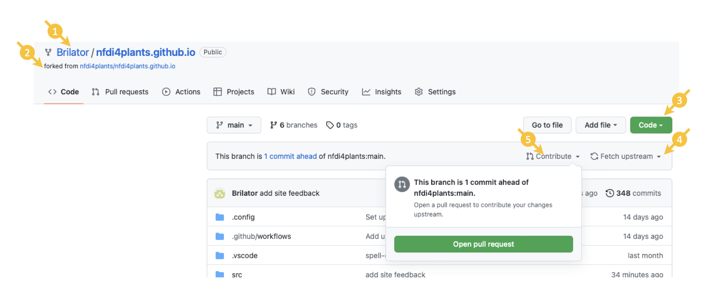

Fundamentals
Research Data Management
FAIR Data Principles
Metadata
Data Sharing
Data Publications
Data Management Plan
Version Control & Git
Public Data Repositories
Persistent Identifiers
Implementation within DataPLANT
Annotated Research Context
ARC QuickStart
DataHUB
Feedback
Feedback & Contribution
last updated at 2022-07-08
Your contribution to the DataPLANT knowledge base is highly appreciated.
This guide is intended to show you how to contribute new articles and tutorials or review and adapt parts of existing ones.
For smaller changes and suggestions, please refer to https://nfdi4plants.github.io/content/docs/Feedback.html.
Introduction
The DataPLANT knowledge base is built on nfdi-web-components and will fit all markdown content into this "framework".
For a general introduction to writing markdown, see: Markdown tutorial and references therein.
GitHub Routines
Note: This is not a full-fledged GitHub tutorial. Please refer to available tutorials online or contact the knowledge base curators.
Sign up for a GitHub account.
Fork the knowledge base git repository.
- This creates a copy of the knowledge base repository in your own GitHub account.
- In the top left, you will see that the repository is associated with your account (1) and forked from the main repository (2).
- You can either directly add or edit content using GitHub or clone (3) your repository to work on it locally.
- Be aware that your fork is not automatically updated, if the main repository updates. Make sure to update your fork regularly (especially before creating new content) by clicking "Fetch upstream" (4) in the top-right corner of your repository.
- If you cloned your repository locally, you also have to update the local clone (via "git pull").

You can work and make any changes on your own fork.
Once you want to submit those changes to the main repository, you can open a "pull request" by clicking "Contribute" (5) in the top-right corner.
Remember to "Fetch upstream" (4), if your fork is not up-to-date with the main repository.
If edited or added existing content, please assign the original author during your pull-request to review your changes.
- The github user name of the original author is stored in the yaml block on top under
author_github
- During the pull-request mention the author via
@<author_github>.
Authoring new content
To add more documentation, add a markdown file to /src/docs. The file MUST start with a metadata block:
---
layout: docs
title: Metadata
published: 2022-05-09
author: Dominik Brilhaus
author_orcid: https://orcid.org/0000-0001-9021-3197
author_github: brilator
add toc: true
add sidebar: sidebars\mainSidebar.md
article_status: published
todo:
- update to include changes in latest tool version
---
- All keys (
layout, author, etc.) are not case sensitive.
- All fields can be at ANY position.
- MUST start and end with
--- .
- MUST contain
layout: docs.
- This triggers fornax parsing to html.
- MUST contain
title: xxxx.
- Will be added as "# xxxx" to the html.
- Will be used to name the generated webpage.
- MUST contain
published: yyyy-MM-dd.
- MAY contain
author: xxxx.
- MAY contain
author_github: xxxx.
- This helps authoring and reviewing content.
- MAY contain
add toc: true.
- Will add automated table of contents from all found headers in content.
- MAY contain
add sidebar: realtive\path\to\sidebar.md to add the sidebar element to the page.
- MAY contain any other metadata. The information will be read but will not affect the generated html.
Sidebar files MAY be in ANY subdirectory of /src/docs. Sidebar markdown files must start with a metadata block:
---
published: 2022-05-09
article_status: published
---
- MAY contain any other metadata. The information will be read but will not affect the generated html.
To add a sidebar element to the page, use the codeblock syntax:
```Data Management Plan
# Data Management Plan:/docs/DataManagementPlan.html
# DataPLANT's Data Management Plan Generator:/docs/DataManagementPlan.html#dataplants-data-management-plan-generator
```
- All text after the opening "```" will be parsed to the element title.
- Inner text MUST only contain heading lines.
- Only headers up to
### are parsed. All header with more depth are parsed to ###.
- Tries to match active browser url to referenced
href of any element to set active page.
Do not!
- Store a markdown (.md, .markdown) file in the /docs folder, that is not supposed to be parsed. Fornax will look for the yaml header and break if it does not exist.
(Live) Testing
Note:
References
- Literature / information references: additional bibliography block below
- External links (tools, sites, platforms): as hyper-link
- Knowledge base cross-references: relative path to *.md document, BUT replace the
.md file extension with .html, as the markdown files are parsed to html.
Structure and format
- Max. 3 headline levels (## & ###)
Images
- simple markdown logic (not HTML):

File naming
- no special characters
- preferably all lowercase to ease cross-references
Content
Addressing readers
- direct address ("you can", not "user can" or "one can...")
Language
British English (?)
Link collection
Note: This is just a link collection for recurrent use in KB articles
Nothing automatised. Just copy/paste.
Dataplant Support
Besides these technical solutions, DataPLANT supports you with community-engaged data stewardship. For further assistance, feel free to reach out via our
helpdesk
or by contacting us
directly
.